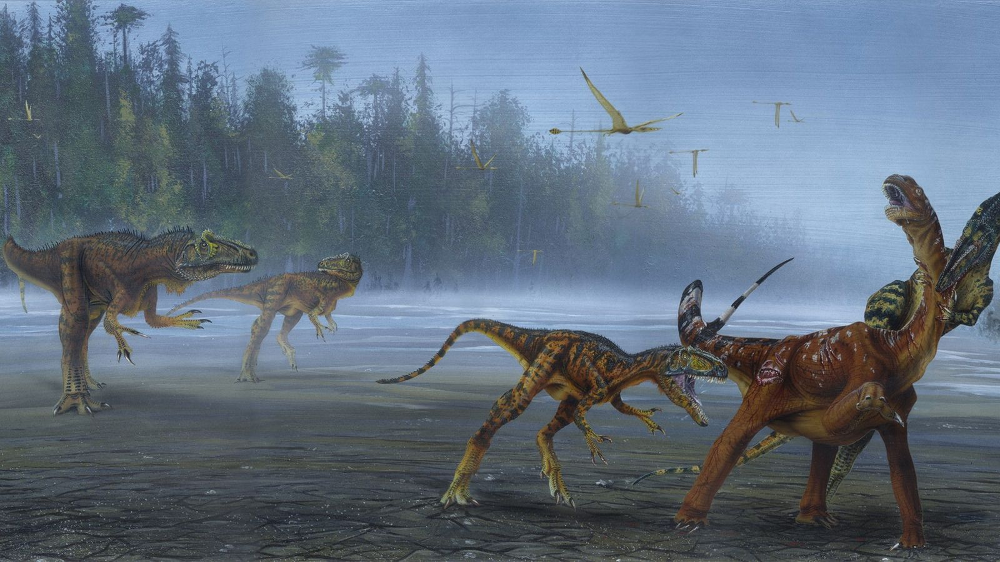
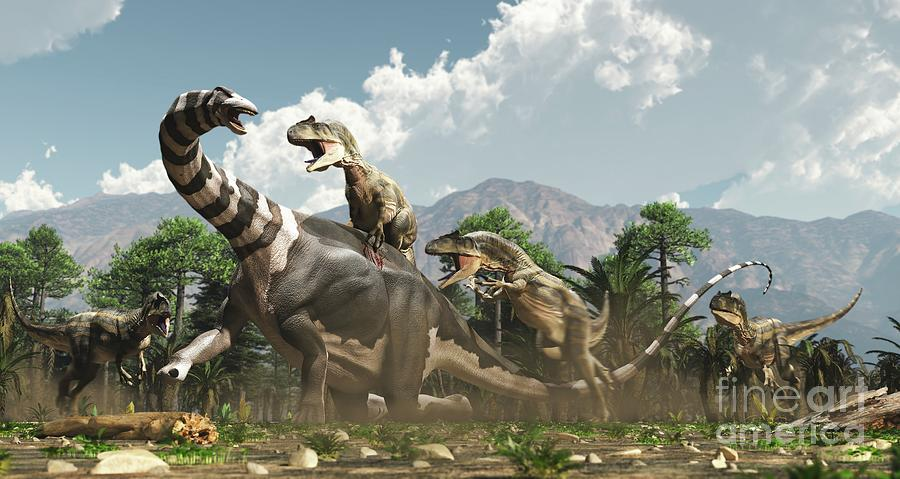
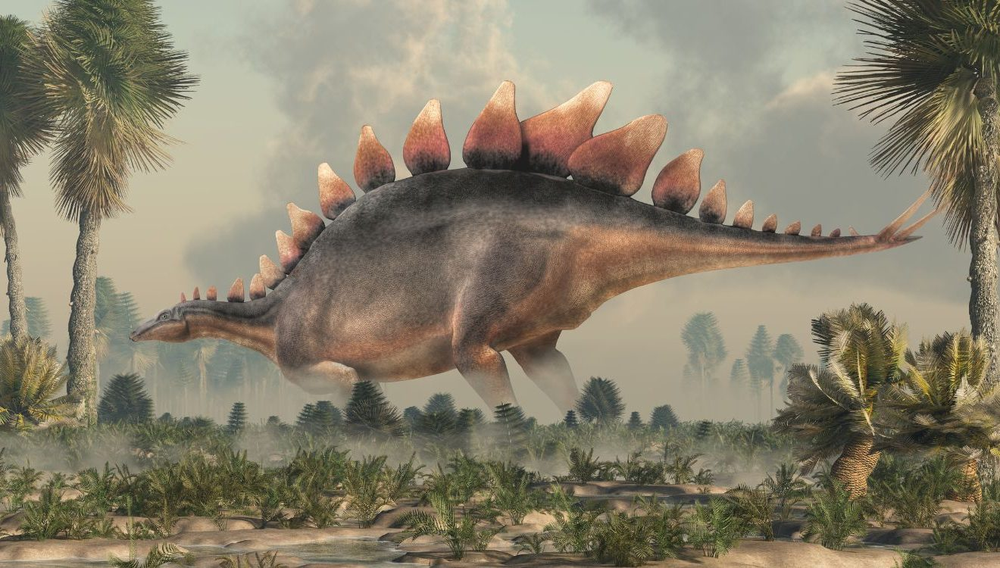

El período Jurásico es una división de la escala temporal geológica que abarca desde hace aproximadamente 201 millones de años hasta hace unos 145 millones de años atrás. Es el segundo período de la era Mesozoica y sigue al período Triásico. El nombre "Jurásico" proviene de la región de Jura en los Alpes suizos, donde se encontraron por primera vez depósitos geológicos de esta época. Durante el Jurásico, la Tierra experimentó una serie de cambios importantes. Uno de los eventos más significativos fue la continuación de la fragmentación de Pangea, el supercontinente que había comenzado durante el Triásico, dando lugar a la separación de los continentes en formas más reconocibles. Esto condujo a la formación de océanos más amplios y la aparición de nuevas cadenas montañosas. El clima durante el Jurásico era generalmente cálido y húmedo, aunque había variaciones regionales. Se desarrollaron extensas selvas tropicales y se formaron vastas llanuras y áreas pantanosas. Los océanos estaban poblados por una diversidad de vida marina, incluyendo reptiles marinos como los plesiosaurios y los ictiosaurios, así como los primeros tiburones y rayas modernos.
En tierra, los dinosaurios alcanzaron su apogeo de diversidad y abundancia. Es durante este período que aparecieron y se diversificaron algunos de los grupos más icónicos de dinosaurios, como los saurópodos gigantes, incluyendo al Diplodocus y al Brachiosaurus, y los terópodos carnívoros, como el Allosaurus y el Archaeopteryx, considerado uno de los primeros pájaros. El Jurásico finalizó con otro evento de extinción masiva, aunque menos devastador que el evento que marcó el final del período Triásico. Esta extinción preparó el terreno para la aparición de nuevas formas de vida y la transición al siguiente período de la era Mesozoica, el Cretácico. En resumen, el período Jurásico fue una época de gran diversidad biológica y cambios geológicos que tuvieron un impacto duradero en la historia de la Tierra.
Durante el periodo Jurásico, los carnívoros jugaron un papel fundamental en la ecología de la Tierra, contribuyendo significativamente a la dinámica de los ecosistemas terrestres. Este fue un momento de notoria diversificación y evolución en el reino animal, donde los dinosaurios carnívoros destacaban como depredadores supremos. Entre ellos, los terópodos se erigían como los principales protagonistas. Especies como el imponente Allosaurus y el formidable Ceratosaurus, con sus adaptaciones anatómicas especializadas, representaban la cúspide de la cadena alimentaria jurásica. Estos depredadores estaban equipados con mandíbulas poderosas, garras afiladas y una agilidad excepcional, lo que les permitía cazar una amplia variedad de presas, desde pequeños reptiles hasta grandes saurópodos herbívoros.
Además de los terópodos, los cielos del Jurásico estaban dominados por los pterosaurios, reptiles voladores que representaban otro grupo de carnívoros distintivos. Con envergaduras que podían alcanzar varios metros, estos hábiles cazadores surcaban los cielos en busca de presas. Algunas especies, como Pterodactylus, se especializaban en capturar peces desde la superficie del mar, mientras que otras se aventuraban a cazar animales terrestres. Su presencia contribuía a la diversidad y complejidad de los ecosistemas jurásicos, añadiendo otra dimensión a la interacción depredador-presa en esta era antigua.
Allosaurus
Ceratosaurus
dilophosaurio
Megalosaurus
carcharodontosaurio
Yangchuanosaurus
Durante el periodo Jurásico, los herbívoros desempeñaron un papel crucial en la configuración y la dinámica de los ecosistemas terrestres. Este fue un momento de una gran diversidad y abundancia de estas criaturas, que ocupaban una amplia gama de nichos ecológicos y contribuían significativamente al equilibrio de la vida en la Tierra. Entre los herbívoros más destacados se encontraban los saurópodos, como el majestuoso Brachiosaurus y el grácil Diplodocus. Estas gigantescas criaturas dominaban los paisajes jurásicos con sus cuerpos masivos y cuellos alargados, alimentándose principalmente de las copas de las plantas más altas, como los helechos y las coníferas.
Los saurópodos, con su impresionante tamaño y su necesidad de grandes cantidades de alimento, ejercían una influencia significativa en la vegetación de sus entornos, moldeando la estructura de los bosques y contribuyendo a la dispersión de semillas. Además de los saurópodos, el Jurásico también albergaba una variedad de otros herbívoros, incluyendo ornitisquios como el Stegosaurus y el icónico Triceratops. Estos herbívoros presentaban una diversidad de adaptaciones defensivas, desde placas óseas hasta cuernos prominentes, que les permitían enfrentarse a los depredadores de la época.
stegosaurio
Brachiosaurus
diplodocus
Camptosaurus
Dryosaurus
Camarasaurus
Durante el periodo Jurásico, la flora desempeñaba un papel fundamental en la configuración de los paisajes terrestres y en la sostenibilidad de los ecosistemas. Este período fue testigo de una exuberante diversidad botánica, donde una variedad de plantas colonizaba y prosperaba en diversos hábitats, desde las profundidades de los bosques hasta los pantanos y humedales. Entre las plantas dominantes se encontraban las coníferas, que formaban bosques densos y frondosos en muchas regiones. Estas resistentes y longevas plantas con semillas se adaptaban bien a una amplia gama de condiciones ambientales, desde climas templados hasta subtropicales, y proporcionaban hábitats vitales para una variedad de especies animales. Además de las coníferas, las cícadas también desempeñaban un papel importante en el paisaje vegetal del Jurásico. Estas plantas con semillas, con sus hojas coriáceas y formas distintivas, eran abundantes y se encontraban en una variedad de entornos, desde laderas montañosas hasta tierras bajas costeras. Su capacidad para prosperar en climas cálidos y húmedos las convertía en componentes clave de los ecosistemas jurásicos, proporcionando alimento y refugio para una variedad de organismos.
Además de las plantas con semillas, el Jurásico también albergaba una diversidad de plantas no vasculares, como musgos y helechos. Estas plantas primitivas colonizaban áreas húmedas y pantanosas, donde contribuían al ciclo de nutrientes y proporcionaban hábitats para una variedad de organismos acuáticos y terrestres. En conjunto, la diversidad y la abundancia de flora durante el Jurásico creaban paisajes vibrantes y diversos, donde las interacciones entre las plantas y otros organismos jugaban un papel crucial en la salud y la sostenibilidad de los ecosistemas.
Cycas
Card Title
Gnetophyta
Pentoxylales
Bennettitopsida

Ginkgo